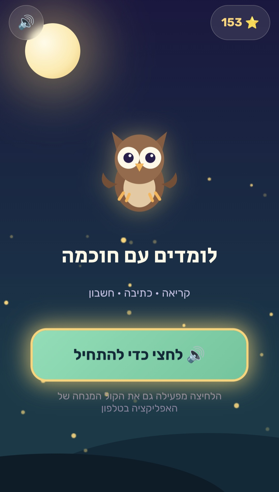

01 · Digital Learning
Hebrew & Math Learning App
Project Overview
An interactive learning application developed in response to a learning need I identified in my daughter's everyday experience.
I transformed this need into a digital learning concept, designing an application focused on practising Hebrew and mathematics through interactive activities.
My Role & Development Process
- Identified the learning need and defined the initial concept.
- Planned the application and its learning activities.
- Used Claude to assist with the development process.
- Tested the application throughout development.
- Reviewed the results, refined the experience, and made adjustments until reaching the current version.
Key Focus Areas: Educational thinking · Problem-solving · Interactive learning · AI-assisted development · Iterative refinement